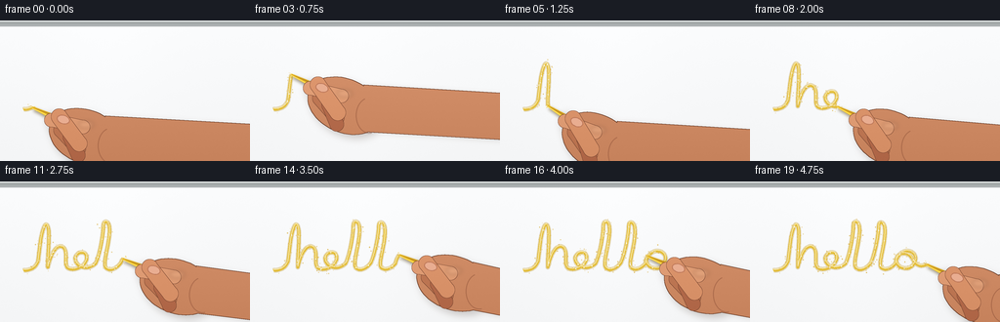
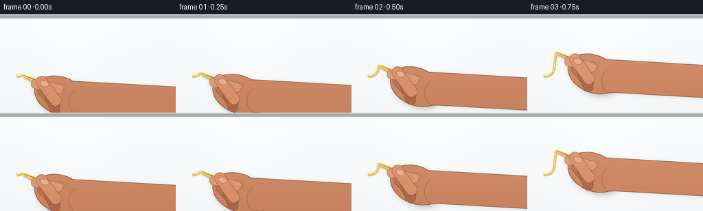
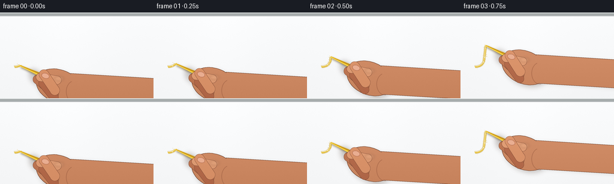
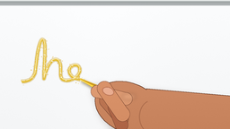
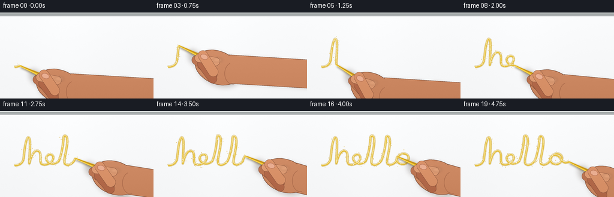

CODING AGENTS AS PIXEL WORLD MODELS
traex/GPT-5.6-Sol · mechanics_0043
点击播放 · 原生 RGB 像素
逐轮保存的候选
回放视频、检查图与代码变化。
每份候选均可单独播放。实际图片检查记录在下方工具轨迹中。
候选 01播放与检查图
点击播放 · 原生 RGB 像素


展开代码变化
--- 上一保存版本
+++ 本次保存版本
@@ -0,0 +1,233 @@
+from pathlib import Path
+import math
+import numpy as np
+from PIL import Image, ImageDraw, ImageFilter
+import artifact_io
+
+W,H,N = 256,144,20
+S=4
+rng=np.random.default_rng(4301)
+
+# Cubic-bezier handwriting path: a single continuous, naturally written "hello".
+segments = [
+ ((24,91),(31,91),(36,89),(39,82)),
+ ((39,82),(41,68),(42,49),(47,44)),
+ ((47,44),(53,45),(48,76),(49,88)),
+ ((49,88),(52,74),(58,64),(64,67)),
+ ((64,67),(71,71),(64,85),(70,89)),
+ ((70,89),(78,92),(89,86),(89,78)),
+ ((89,78),(89,71),(79,71),(77,78)),
+ ((77,78),(76,86),(88,93),(98,84)),
+ ((98,84),(103,73),(106,52),(106,45)),
+ ((106,45),(106,39),(112,40),(112,48)),
+ ((112,48),(113,62),(105,82),(108,88)),
+ ((108,88),(112,93),(120,89),(124,83)),
+ ((124,83),(129,72),(132,51),(132,45)),
+ ((132,45),(132,40),(138,41),(138,49)),
+ ((138,49),(139,65),(131,83),(134,88)),
+ ((134,88),(138,92),(145,89),(149,84)),
+ ((149,84),(151,74),(158,69),(165,72)),
+ ((165,72),(173,76),(169,87),(162,89)),
+ ((162,89),(154,90),(149,85),(150,79)),
+ ((150,79),(152,73),(159,72),(164,76)),
+ ((164,76),(169,83),(171,89),(181,85)),
+]
+
+def bez(p0,p1,p2,p3,t):
+ u=1-t
+ return (u**3*np.array(p0)+3*u*u*t*np.array(p1)+3*u*t*t*np.array(p2)+t**3*np.array(p3))
+pts=[]
+for si,seg in enumerate(segments):
+ for t in np.linspace(0,1,19,endpoint=(si==len(segments)-1)):
+ pts.append(bez(*seg,t))
+pts=np.asarray(pts,float)
+# Redistribute samples uniformly by arc length for natural tip velocity.
+d=np.linalg.norm(np.diff(pts,axis=0),axis=1)
+cum=np.r_[0,np.cumsum(d)]
+length=cum[-1]
+us=np.linspace(0,length,1050)
+path=np.column_stack([np.interp(us,cum,pts[:,0]),np.interp(us,cum,pts[:,1])])
+
+# Stable texture maps, giving the pristine board a subtle porcelain surface.
+yy,xx=np.mgrid[0:H*S,0:W*S]
+board_noise=rng.normal(0,0.65,(H*S,W*S))
+
+def poly_ellipse(cx,cy,rx,ry,ang,n=64):
+ a=math.radians(ang); ca,sa=math.cos(a),math.sin(a)
+ out=[]
+ for q in np.linspace(0,2*math.pi,n,endpoint=False):
+ X=rx*math.cos(q); Y=ry*math.sin(q)
+ out.append(((cx+ca*X-sa*Y)*S,(cy+sa*X+ca*Y)*S))
+ return out
+
+def new_mask(): return Image.new('L',(W*S,H*S),0)
+def capsule(mask,a,b,width,fill=255):
+ dr=ImageDraw.Draw(mask)
+ a=(int(a[0]*S),int(a[1]*S)); b=(int(b[0]*S),int(b[1]*S)); w=max(1,int(width*S))
+ dr.line([a,b],fill=fill,width=w)
+ r=w//2
+ for p in (a,b): dr.ellipse((p[0]-r,p[1]-r,p[0]+r,p[1]+r),fill=fill)
+
+def paint_mask(canvas, mask, base, light=10, noise=1.0):
+ arr=np.empty((H*S,W*S,4),np.uint8)
+ grad=np.clip((0.55-yy/(H*S))*light,-light,light)
+ tex=rng.normal(0,noise,(H*S,W*S))
+ for k,c in enumerate(base): arr[:,:,k]=np.clip(c+grad+tex,0,255)
+ arr[:,:,3]=np.asarray(mask)
+ return Image.alpha_composite(canvas,Image.fromarray(arr,'RGBA'))
+
+def outline(canvas,mask,color=(105,60,39,120),radius=2):
+ dil=mask.filter(ImageFilter.MaxFilter(radius*2+1))
+ edge=np.asarray(dil,dtype=np.int16)-np.asarray(mask,dtype=np.int16)
+ lay=Image.new('RGBA',(W*S,H*S),color)
+ lay.putalpha(Image.fromarray(np.uint8(np.clip(edge,0,255))))
+ return Image.alpha_composite(canvas,lay)
+
+def draw_hand(base, tip, tangent, frame):
+ # Chalk slants from its contact point toward the writer's palm.
+ ang=27 + 2.0*math.sin(frame*.38) + np.clip(tangent[1]*10,-3,3)
+ av=np.array([math.cos(math.radians(ang)),math.sin(math.radians(ang))])
+ pv=np.array([-av[1],av[0]])
+ palm=tip+av*57+np.array([3,7])
+
+ # A unified soft cast shadow grounds hand and chalk directly on glossy board.
+ sh=new_mask(); sd=ImageDraw.Draw(sh)
+ sd.polygon(poly_ellipse(palm[0]+3,palm[1]+4,39,27,ang-2),fill=190)
+ sd.polygon([(int((palm[0]+25)*S),int((palm[1]-18)*S)),((W+8)*S,int((palm[1]-8)*S)),
+ ((W+8)*S,int((palm[1]+34)*S)),(int((palm[0]+15)*S),int((palm[1]+24)*S))],fill=190)
+ capsule(sh,tip+av*20+[4,5],palm+[1,5],15,190)
+ capsule(sh,tip+av*26+[1,10],palm+[-5,14],16,190)
+ sh=sh.filter(ImageFilter.GaussianBlur(4*S))
+ shadow=Image.new('RGBA',(W*S,H*S),(70,55,45,0)); shadow.putalpha(sh.point(lambda v:int(v*.36)))
+ base=Image.alpha_composite(base,shadow)
+
+ # Back of palm and wrist.
+ body=new_mask(); bd=ImageDraw.Draw(body)
+ bd.polygon(poly_ellipse(palm[0],palm[1],39,27,ang-2),fill=255)
+ bd.polygon([(int((palm[0]+20)*S),int((palm[1]-21)*S)),((W+12)*S,int((palm[1]-12)*S)),
+ ((W+12)*S,int((palm[1]+35)*S)),(int((palm[0]+13)*S),int((palm[1]+26)*S))],fill=255)
+ base=outline(base,body)
+ base=paint_mask(base,body,(207,139,101),light=20,noise=0.75)
+
+ # Warm shadow at wrist crease.
+ crease=Image.new('RGBA',(W*S,H*S),(0,0,0,0)); cd=ImageDraw.Draw(crease)
+ q=palm+av*24
+ cd.arc((int((q[0]-10)*S),int((q[1]-19)*S),int((q[0]+18)*S),int((q[1]+18)*S)),80,250,fill=(132,73,50,105),width=1*S)
+ base=Image.alpha_composite(base,crease)
+
+ # Two curled fingers behind the chalk.
+ for off,w,col in [((4,12),15,(190,119,84)),((13,19),14,(180,107,76))]:
+ m=new_mask(); capsule(m,tip+av*28+np.array(off),palm+np.array((-8,off[1])),w)
+ base=outline(base,m,(100,56,39,95),1)
+ base=paint_mask(base,m,col,light=14,noise=.65)
+
+ # Chalk cast shadow, narrow and close to the porcelain.
+ L=38.; wid=7.4
+ end=tip+av*L
+ cs=new_mask(); cdraw=ImageDraw.Draw(cs)
+ corners=[tip+pv*wid*.22+[1.5,2.3], tip-pv*wid*.22+[1.5,2.3], end-pv*wid*.5+[1.5,2.3],end+pv*wid*.5+[1.5,2.3]]
+ cdraw.polygon([(int(x*S),int(y*S)) for x,y in corners],fill=125)
+ cs=cs.filter(ImageFilter.GaussianBlur(1.5*S))
+ cl=Image.new('RGBA',(W*S,H*S),(76,57,17,0)); cl.putalpha(cs)
+ base=Image.alpha_composite(base,cl)
+
+ # Yellow chalk body with tapered, visibly abraded contact tip.
+ chalk=Image.new('RGBA',(W*S,H*S),(0,0,0,0)); ch=ImageDraw.Draw(chalk)
+ corners=[tip+pv*1.05,tip-pv*1.05,end-pv*wid*.5,end+pv*wid*.5]
+ ch.polygon([(int(x*S),int(y*S)) for x,y in corners],fill=(238,190,33,255))
+ # lower side and top highlight create a cylindrical stick
+ side=[tip-pv*.2,end-pv*wid*.5,end-pv*wid*.08,tip]
+ ch.polygon([(int(x*S),int(y*S)) for x,y in side],fill=(190,137,21,230))
+ ch.line([(int((tip+pv*.55)[0]*S),int((tip+pv*.55)[1]*S)),
+ (int((end+pv*wid*.28)[0]*S),int((end+pv*wid*.28)[1]*S))],fill=(255,226,92,245),width=S)
+ # broken flat end
+ ch.line([(int((end-pv*wid*.5)[0]*S),int((end-pv*wid*.5)[1]*S)),
+ (int((end+pv*wid*.5)[0]*S),int((end+pv*wid*.5)[1]*S))],fill=(139,96,19,255),width=S)
+ base=Image.alpha_composite(base,chalk)
+
+ # Index finger rests along the chalk from above.
+ idx=new_mask(); capsule(idx,palm+np.array([-3,-10]),tip+av*23+pv*4.2,13.5)
+ base=outline(base,idx,(102,56,39,120),1)
+ base=paint_mask(base,idx,(224,157,117),light=18,noise=.65)
+ # knuckle highlight
+ hi=Image.new('RGBA',(W*S,H*S),(0,0,0,0)); hd=ImageDraw.Draw(hi)
+ p=palm+np.array([0,-11]); hd.ellipse((int((p[0]-8)*S),int((p[1]-5)*S),int((p[0]+8)*S),int((p[1]+2)*S)),fill=(255,203,165,45))
+ base=Image.alpha_composite(base,hi.filter(ImageFilter.GaussianBlur(2*S)))
+
+ # Thumb wraps over the front of the stick.
+ thumb=new_mask(); capsule(thumb,palm+np.array([-7,7]),tip+av*29-pv*2.5,16)
+ base=outline(base,thumb,(102,56,39,140),1)
+ base=paint_mask(base,thumb,(219,148,107),light=17,noise=.7)
+ # thumbnail, aligned with chalk
+ nailc=tip+av*34-pv*1.5
+ nail=Image.new('RGBA',(W*S,H*S),(0,0,0,0)); nd=ImageDraw.Draw(nail)
+ nd.polygon(poly_ellipse(nailc[0],nailc[1],6.5,4.5,ang-5,40),fill=(235,177,150,225))
+ nd.line(poly_ellipse(nailc[0],nailc[1],6.4,4.4,ang-5,40)+[poly_ellipse(nailc[0],nailc[1],6.4,4.4,ang-5,40)[0]],fill=(172,104,81,140),width=S)
+ base=Image.alpha_composite(base,nail)
+ return base
+
+def make_frame(fi):
+ # Porcelain board: cool white, subtle fine texture, broad specular reflection.
+ grad=249 - 7*(yy/(H*S)) + 2.2*np.exp(-((xx-W*S*.43)/(W*S*.24))**2)
+ arr=np.empty((H*S,W*S,3),np.uint8)
+ arr[:,:,0]=np.clip(grad+board_noise+2,0,255)
+ arr[:,:,1]=np.clip(grad+board_noise+3,0,255)
+ arr[:,:,2]=np.clip(grad+board_noise+4,0,255)
+ im=Image.fromarray(arr,'RGB').convert('RGBA')
+ # Slim aluminium rail at top, making the white surface read as a board.
+ rail=Image.new('RGBA',im.size,(0,0,0,0)); rd=ImageDraw.Draw(rail)
+ rd.rectangle((0,0,W*S,5*S),fill=(163,169,169,255))
+ rd.rectangle((0,0,W*S,1*S),fill=(226,230,229,255))
+ rd.rectangle((0,4*S,W*S,6*S),fill=(104,112,114,135))
+ rd.line((0,7*S,W*S,7*S),fill=(255,255,255,150),width=S)
+ im=Image.alpha_composite(im,rail)
+
+ # eased writing progress, with a tiny initial mark visible.
+ t=fi/(N-1)
+ prog=0.018 + .982*(t*t*(3-2*t))
+ k=max(2,int(prog*(len(path)-1)))
+ revealed=path[:k+1]
+
+ # Chalk trail: soft under-stroke, granular body, sparse powder crumbs.
+ wr=Image.new('RGBA',im.size,(0,0,0,0)); wd=ImageDraw.Draw(wr)
+ P=[(int(x*S),int(y*S)) for x,y in revealed]
+ wd.line(P,fill=(180,137,22,75),width=5*S,joint='curve')
+ wd.line(P,fill=(224,180,27,220),width=3*S,joint='curve')
+ wd.line([(x,y-1*S) for x,y in P],fill=(250,211,69,120),width=S,joint='curve')
+ # Stable texture holes and crumbs indexed by traveled distance.
+ ntex=int(k/3)
+ rr=np.random.default_rng(891)
+ inds=rr.integers(0,max(1,k),size=400)
+ offsets=rr.normal(0,2.2,(400,2))
+ for j in range(min(ntex,400)):
+ ii=int(inds[j]); x,y=path[ii]+offsets[j]
+ if rr.random()<.63:
+ r=float(rr.uniform(.25,.7))*S
+ wd.ellipse((x*S-r,y*S-r,x*S+r,y*S+r),fill=(210,158,23,int(rr.integers(70,180))))
+ # A few pale gaps suggest brittle chalk skipping over microscopic texture.
+ rr2=np.random.default_rng(223)
+ for ii in rr2.integers(8,max(9,k),size=min(20,max(0,k//25))):
+ x,y=path[int(ii)]
+ r=.45*S
+ wd.ellipse((x*S-r,y*S-r,x*S+r,y*S+r),fill=(248,249,248,90))
+ im=Image.alpha_composite(im,wr)
+
+ tip=path[k].copy()
+ tangent=path[min(k+4,len(path)-1)]-path[max(0,k-4)]
+ tangent=tangent/(np.linalg.norm(tangent)+1e-6)
+ # Minute friction vibration, without disrupting frame coherence.
+ tip += np.array([0.20*math.sin(fi*1.9),0.16*math.sin(fi*2.7)])
+ im=draw_hand(im,tip,tangent,fi)
+
+ # Contact-point powder bloom sits in front of tip.
+ dust=Image.new('RGBA',im.size,(0,0,0,0)); dd=ImageDraw.Draw(dust)
+ rr3=np.random.default_rng(700+fi)
+ for _ in range(7):
+ dx,dy=rr3.normal(0,[2.2,1.7]); r=rr3.uniform(.18,.5)*S
+ dd.ellipse(((tip[0]+dx)*S-r,(tip[1]+dy)*S-r,(tip[0]+dx)*S+r,(tip[1]+dy)*S+r),fill=(237,195,47,int(rr3.integers(80,180))))
+ im=Image.alpha_composite(im,dust)
+ return np.asarray(im.convert('RGB').resize((W,H),Image.Resampling.LANCZOS),dtype=np.uint8)
+
+frames=np.stack([make_frame(i) for i in range(N)],axis=0)
+artifact_io.save(frames,Path(__file__).resolve().parent)
+print('saved',frames.shape,frames.dtype)
候选 02播放与检查图
点击播放 · 原生 RGB 像素


展开代码变化
--- 上一保存版本
+++ 本次保存版本
@@ -88,7 +88,9 @@
ang=27 + 2.0*math.sin(frame*.38) + np.clip(tangent[1]*10,-3,3)
av=np.array([math.cos(math.radians(ang)),math.sin(math.radians(ang))])
pv=np.array([-av[1],av[0]])
- palm=tip+av*57+np.array([3,7])
+ # Keep a generous section of the stick exposed between the writing point
+ # and the grip, so its material and contact are unmistakable.
+ palm=tip+av*68+np.array([3,7])
# A unified soft cast shadow grounds hand and chalk directly on glossy board.
sh=new_mask(); sd=ImageDraw.Draw(sh)
@@ -122,7 +124,7 @@
base=paint_mask(base,m,col,light=14,noise=.65)
# Chalk cast shadow, narrow and close to the porcelain.
- L=38.; wid=7.4
+ L=55.; wid=7.4
end=tip+av*L
cs=new_mask(); cdraw=ImageDraw.Draw(cs)
corners=[tip+pv*wid*.22+[1.5,2.3], tip-pv*wid*.22+[1.5,2.3], end-pv*wid*.5+[1.5,2.3],end+pv*wid*.5+[1.5,2.3]]
@@ -146,7 +148,7 @@
base=Image.alpha_composite(base,chalk)
# Index finger rests along the chalk from above.
- idx=new_mask(); capsule(idx,palm+np.array([-3,-10]),tip+av*23+pv*4.2,13.5)
+ idx=new_mask(); capsule(idx,palm+np.array([-3,-10]),tip+av*39+pv*4.2,13.5)
base=outline(base,idx,(102,56,39,120),1)
base=paint_mask(base,idx,(224,157,117),light=18,noise=.65)
# knuckle highlight
@@ -155,11 +157,11 @@
base=Image.alpha_composite(base,hi.filter(ImageFilter.GaussianBlur(2*S)))
# Thumb wraps over the front of the stick.
- thumb=new_mask(); capsule(thumb,palm+np.array([-7,7]),tip+av*29-pv*2.5,16)
+ thumb=new_mask(); capsule(thumb,palm+np.array([-7,7]),tip+av*43-pv*2.5,16)
base=outline(base,thumb,(102,56,39,140),1)
base=paint_mask(base,thumb,(219,148,107),light=17,noise=.7)
# thumbnail, aligned with chalk
- nailc=tip+av*34-pv*1.5
+ nailc=tip+av*46-pv*1.5
nail=Image.new('RGBA',(W*S,H*S),(0,0,0,0)); nd=ImageDraw.Draw(nail)
nd.polygon(poly_ellipse(nailc[0],nailc[1],6.5,4.5,ang-5,40),fill=(235,177,150,225))
nd.line(poly_ellipse(nailc[0],nailc[1],6.4,4.4,ang-5,40)+[poly_ellipse(nailc[0],nailc[1],6.4,4.4,ang-5,40)[0]],fill=(172,104,81,140),width=S)
可观测工具轨迹
实际执行的命令与返回图片。
命令 1exit 0
/bin/bash -lc "cat prompt.txt && printf '\\n---RULES---\\n' && cat GENERATION_RULES.md && printf '\\n---SPEC---\\n' && cat task_spec.json"
命令 2exit 0
/bin/bash -lc "find . -maxdepth 2 -type f -printf '%p\\n' | sort"
命令 3exit 0
/bin/bash -lc 'cat artifact_io.py'
命令 4exit 0
/bin/bash -lc 'fc-list | head -30'
命令 5exit 0
/bin/bash -lc "cat > generate.py <<'PY'
from pathlib import Path
import math
import numpy as np
from PIL import Image, ImageDraw, ImageFilter
import artifact_io
W,H,N = 256,144,20
S=4
rng=np.random.default_rng(4301)
# Cubic-bezier handwriting path: a single continuous, naturally written \"hello\".
segments = [
((24,91),(31,91),(36,89),(39,82)),
((39,82),(41,68),(42,49),(47,44)),
((47,44),(53,45),(48,76),(49,88)),
((49,88),(52,74),(58,64),(64,67)),
((64,67),(71,71),(64,85),(70,89)),
((70,89),(78,92),(89,86),(89,78)),
((89,78),(89,71),(79,71),(77,78)),
((77,78),(76,86),(88,93),(98,84)),
((98,84),(103,73),(106,52),(106,45)),
((106,45),(106,39),(112,40),(112,48)),
((112,48),(113,62),(105,82),(108,88)),
((108,88),(112,93),(120,89),(124,83)),
((124,83),(129,72),(132,51),(132,45)),
((132,45),(132,40),(138,41),(138,49)),
((138,49),(139,65),(131,83),(134,88)),
((134,88),(138,92),(145,89),(149,84)),
((149,84),(151,74),(158,69),(165,72)),
((165,72),(173,76),(169,87),(162,89)),
((162,89),(154,90),(149,85),(150,79)),
((150,79),(152,73),(159,72),(164,76)),
((164,76),(169,83),(171,89),(181,85)),
]
def bez(p0,p1,p2,p3,t):
u=1-t
return (u**3*np.array(p0)+3*u*u*t*np.array(p1)+3*u*t*t*np.array(p2)+t**3*np.array(p3))
pts=[]
for si,seg in enumerate(segments):
for t in np.linspace(0,1,19,endpoint=(si==len(segments)-1)):
pts.append(bez(*seg,t))
pts=np.asarray(pts,float)
# Redistribute samples uniformly by arc length for natural tip velocity.
d=np.linalg.norm(np.diff(pts,axis=0),axis=1)
cum=np.r_[0,np.cumsum(d)]
length=cum[-1]
us=np.linspace(0,length,1050)
path=np.column_stack([np.interp(us,cum,pts[:,0]),np.interp(us,cum,pts[:,1])])
# Stable texture maps, giving the pristine board a subtle porcelain surface.
yy,xx=np.mgrid[0:H*S,0:W*S]
board_noise=rng.normal(0,0.65,(H*S,W*S))
def poly_ellipse(cx,cy,rx,ry,ang,n=64):
a=math.radians(ang); ca,sa=math.cos(a),math.sin(a)
out=[]
for q in np.linspace(0,2*math.pi,n,endpoint=False):
X=rx*math.cos(q); Y=ry*math.sin(q)
out.append(((cx+ca*X-sa*Y)*S,(cy+sa*X+ca*Y)*S))
return out
def new_mask(): return Image.new('L',(W*S,H*S),0)
def capsule(mask,a,b,width,fill=255):
dr=ImageDraw.Draw(mask)
a=(int(a[0]*S),int(a[1]*S)); b=(int(b[0]*S),int(b[1]*S)); w=max(1,int(width*S))
dr.line([a,b],fill=fill,width=w)
r=w//2
for p in (a,b): dr.ellipse((p[0]-r,p[1]-r,p[0]+r,p[1]+r),fill=fill)
def paint_mask(canvas, mask, base, light=10, noise=1.0):
arr=np.empty((H*S,W*S,4),np.uint8)
grad=np.clip((0.55-yy/(H*S))*light,-light,light)
tex=rng.normal(0,noise,(H*S,W*S))
for k,c in enumerate(base): arr[:,:,k]=np.clip(c+grad+tex,0,255)
arr[:,:,3]=np.asarray(mask)
return Image.alpha_composite(canvas,Image.fromarray(arr,'RGBA'))
def outline(canvas,mask,color=(105,60,39,120),radius=2):
dil=mask.filter(ImageFilter.MaxFilter(radius*2+1))
edge=np.asarray(dil,dtype=np.int16)-np.asarray(mask,dtype=np.int16)
lay=Image.new('RGBA',(W*S,H*S),color)
lay.putalpha(Image.fromarray(np.uint8(np.clip(edge,0,255))))
return Image.alpha_composite(canvas,lay)
def draw_hand(base, tip, tangent, frame):
# Chalk slants from its contact point toward the writer's palm.
ang=27 + 2.0*math.sin(frame*.38) + np.clip(tangent[1]*10,-3,3)
av=np.array([math.cos(math.radians(ang)),math.sin(math.radians(ang))])
pv=np.array([-av[1],av[0]])
palm=tip+av*57+np.array([3,7])
# A unified soft cast shadow grounds hand and chalk directly on glossy board.
sh=new_mask(); sd=ImageDraw.Draw(sh)
sd.polygon(poly_ellipse(palm[0]+3,palm[1]+4,39,27,ang-2),fill=190)
sd.polygon([(int((palm[0]+25)*S),int((palm[1]-18)*S)),((W+8)*S,int((palm[1]-8)*S)),
((W+8)*S,int((palm[1]+34)*S)),(int((palm[0]+15)*S),int((palm[1]+24)*S))],fill=190)
capsule(sh,tip+av*20+[4,5],palm+[1,5],15,190)
capsule(sh,tip+av*26+[1,10],palm+[-5,14],16,190)
sh=sh.filter(ImageFilter.GaussianBlur(4*S))
shadow=Image.new('RGBA',(W*S,H*S),(70,55,45,0)); shadow.putalpha(sh.point(lambda v:int(v*.36)))
base=Image.alpha_composite(base,shadow)
# Back of palm and wrist.
body=new_mask(); bd=ImageDraw.Draw(body)
bd.polygon(poly_ellipse(palm[0],palm[1],39,27,ang-2),fill=255)
bd.polygon([(int((palm[0]+20)*S),int((palm[1]-21)*S)),((W+12)*S,int((palm[1]-12)*S)),
((W+12)*S,int((palm[1]+35)*S)),(int((palm[0]+13)*S),int((palm[1]+26)*S))],fill=255)
base=outline(base,body)
base=paint_mask(base,body,(207,139,101),light=20,noise=0.75)
# Warm shadow at wrist crease.
crease=Image.new('RGBA',(W*S,H*S),(0,0,0,0)); cd=ImageDraw.Draw(crease)
q=palm+av*24
cd.arc((int((q[0]-10)*S),int((q[1]-19)*S),int((q[0]+18)*S),int((q[1]+18)*S)),80,250,fill=(132,73,50,105),width=1*S)
base=Image.alpha_composite(base,crease)
# Two curled fingers behind the chalk.
for off,w,col in [((4,12),15,(190,119,84)),((13,19),14,(180,107,76))]:
m=new_mask(); capsule(m,tip+av*28+np.array(off),palm+np.array((-8,off[1])),w)
base=outline(base,m,(100,56,39,95),1)
base=paint_mask(base,m,col,light=14,noise=.65)
# Chalk cast shadow, narrow and close to the porcelain.
L=38.; wid=7.4
end=tip+av*L
cs=new_mask(); cdraw=ImageDraw.Draw(cs)
corners=[tip+pv*wid*.22+[1.5,2.3], tip-pv*wid*.22+[1.5,2.3], end-pv*wid*.5+[1.5,2.3],end+pv*wid*.5+[1.5,2.3]]
cdraw.polygon([(int(x*S),int(y*S)) for x,y in corners],fill=125)
cs=cs.filter(ImageFilter.GaussianBlur(1.5*S))
cl=Image.new('RGBA',(W*S,H*S),(76,57,17,0)); cl.putalpha(cs)
base=Image.alpha_composite(base,cl)
# Yellow chalk body with tapered, visibly abraded contact tip.
chalk=Image.new('RGBA',(W*S,H*S),(0,0,0,0)); ch=ImageDraw.Draw(chalk)
corners=[tip+pv*1.05,tip-pv*1.05,end-pv*wid*.5,end+pv*wid*.5]
ch.polygon([(int(x*S),int(y*S)) for x,y in corners],fill=(238,190,33,255))
# lower side and top highlight create a cylindrical stick
side=[tip-pv*.2,end-pv*wid*.5,end-pv*wid*.08,tip]
ch.polygon([(int(x*S),int(y*S)) for x,y in side],fill=(190,137,21,230))
ch.line([(int((tip+pv*.55)[0]*S),int((tip+pv*.55)[1]*S)),
(int((end+pv*wid*.28)[0]*S),int((end+pv*wid*.28)[1]*S))],fill=(255,226,92,245),width=S)
# broken flat end
ch.line([(int((end-pv*wid*.5)[0]*S),int((end-pv*wid*.5)[1]*S)),
(int((end+pv*wid*.5)[0]*S),int((end+pv*wid*.5)[1]*S))],fill=(139,96,19,255),width=S)
base=Image.alpha_composite(base,chalk)
# Index finger rests along the chalk from above.
idx=new_mask(); capsule(idx,palm+np.array([-3,-10]),tip+av*23+pv*4.2,13.5)
base=outline(base,idx,(102,56,39,120),1)
base=paint_mask(base,idx,(224,157,117),light=18,noise=.65)
# knuckle highlight
hi=Image.new('RGBA',(W*S,H*S),(0,0,0,0)); hd=ImageDraw.Draw(hi)
p=palm+np.array([0,-11]); hd.ellipse((int((p[0]-8)*S),int((p[1]-5)*S),int((p[0]+8)*S),int((p[1]+2)*S)),fill=(255,203,165,45))
base=Image.alpha_composite(base,hi.filter(ImageFilter.GaussianBlur(2*S)))
# Thumb wraps over the front of the stick.
thumb=new_mask(); capsule(thumb,palm+np.array([-7,7]),tip+av*29-pv*2.5,16)
base=outline(base,thumb,(102,56,39,140),1)
base=paint_mask(base,thumb,(219,148,107),light=17,noise=.7)
# thumbnail, aligned with chalk
nailc=tip+av*34-pv*1.5
nail=Image.new('RGBA',(W*S,H*S),(0,0,0,0)); nd=ImageDraw.Draw(nail)
nd.polygon(poly_ellipse(nailc[0],nailc[1],6.5,4.5,ang-5,40),fill=(235,177,150,225))
nd.line(poly_ellipse(nailc[0],nailc[1],6.4,4.4,ang-5,40)+[poly_ellipse(nailc[0],nailc[1],6.4,4.4,ang-5,40)[0]],fill=(172,104,81,140),width=S)
base=Image.alpha_composite(base,nail)
return base
def make_frame(fi):
# Porcelain board: cool white, subtle fine texture, broad specular reflection.
grad=249 - 7*(yy/(H*S)) + 2.2*np.exp(-((xx-W*S*.43)/(W*S*.24))**2)
arr=np.empty((H*S,W*S,3),np.uint8)
arr[:,:,0]=np.clip(grad+board_noise+2,0,255)
arr[:,:,1]=np.clip(grad+board_noise+3,0,255)
arr[:,:,2]=np.clip(grad+board_noise+4,0,255)
im=Image.fromarray(arr,'RGB').convert('RGBA')
# Slim aluminium rail at top, making the white surface read as a board.
rail=Image.new('RGBA',im.size,(0,0,0,0)); rd=ImageDraw.Draw(rail)
rd.rectangle((0,0,W*S,5*S),fill=(163,169,169,255))
rd.rectangle((0,0,W*S,1*S),fill=(226,230,229,255))
rd.rectangle((0,4*S,W*S,6*S),fill=(104,112,114,135))
rd.line((0,7*S,W*S,7*S),fill=(255,255,255,150),width=S)
im=Image.alpha_composite(im,rail)
# eased writing progress, with a tiny initial mark visible.
t=fi/(N-1)
prog=0.018 + .982*(t*t*(3-2*t))
k=max(2,int(prog*(len(path)-1)))
revealed=path[:k+1]
# Chalk trail: soft under-stroke, granular body, sparse powder crumbs.
wr=Image.new('RGBA',im.size,(0,0,0,0)); wd=ImageDraw.Draw(wr)
P=[(int(x*S),int(y*S)) for x,y in revealed]
wd.line(P,fill=(180,137,22,75),width=5*S,joint='curve')
wd.line(P,fill=(224,180,27,220),width=3*S,joint='curve')
wd.line([(x,y-1*S) for x,y in P],fill=(250,211,69,120),width=S,joint='curve')
# Stable texture holes and crumbs indexed by traveled distance.
ntex=int(k/3)
rr=np.random.default_rng(891)
inds=rr.integers(0,max(1,k),size=400)
offsets=rr.normal(0,2.2,(400,2))
for j in range(min(ntex,400)):
ii=int(inds[j]); x,y=path[ii]+offsets[j]
if rr.random()<.63:
r=float(rr.uniform(.25,.7))*S
wd.ellipse((x*S-r,y*S-r,x*S+r,y*S+r),fill=(210,158,23,int(rr.integers(70,180))))
# A few pale gaps suggest brittle chalk skipping over microscopic texture.
rr2=np.random.default_rng(223)
for ii in rr2.integers(8,max(9,k),size=min(20,max(0,k//25))):
x,y=path[int(ii)]
r=.45*S
wd.ellipse((x*S-r,y*S-r,x*S+r,y*S+r),fill=(248,249,248,90))
im=Image.alpha_composite(im,wr)
tip=path[k].copy()
tangent=path[min(k+4,len(path)-1)]-path[max(0,k-4)]
tangent=tangent/(np.linalg.norm(tangent)+1e-6)
# Minute friction vibration, without disrupting frame coherence.
tip += np.array([0.20*math.sin(fi*1.9),0.16*math.sin(fi*2.7)])
im=draw_hand(im,tip,tangent,fi)
# Contact-point powder bloom sits in front of tip.
dust=Image.new('RGBA',im.size,(0,0,0,0)); dd=ImageDraw.Draw(dust)
rr3=np.random.default_rng(700+fi)
for _ in range(7):
dx,dy=rr3.normal(0,[2.2,1.7]); r=rr3.uniform(.18,.5)*S
dd.ellipse(((tip[0]+dx)*S-r,(tip[1]+dy)*S-r,(tip[0]+dx)*S+r,(tip[1]+dy)*S+r),fill=(237,195,47,int(rr3.integers(80,180))))
im=Image.alpha_composite(im,dust)
return np.asarray(im.convert('RGB').resize((W,H),Image.Resampling.LANCZOS),dtype=np.uint8)
frames=np.stack([make_frame(i) for i in range(N)],axis=0)
artifact_io.save(frames,Path(__file__).resolve().parent)
print('saved',frames.shape,frames.dtype)
PY
python generate.py"命令 6exit 1
/bin/bash -lc "python generate.py >/tmp/gen.log 2>&1 && tail -3 /tmp/gen.log && python - <<'PY'
import numpy as np
p=np.load('pixels.npz')['pixels']
print('pixels',p.shape,p.dtype,'frames',len(list(__import__('pathlib').Path('frames').glob('*.png'))))
PY"命令 7exit 0
/bin/bash -lc "python generate.py >.tmp/gen.log 2>&1 && tail -3 .tmp/gen.log && python - <<'PY'
import numpy as np
from pathlib import Path
p=np.load('pixels.npz')['pixels']
print('pixels',p.shape,p.dtype,'frames',len(list(Path('frames').glob('*.png'))))
PY"视觉工具实际返回图片 1

视觉工具实际返回图片 2

视觉工具实际返回图片 3

保存候选 2 份；完成命令 7 次；可验证图片返回 3 张。原始 API 响应与完整日志保留在本地。